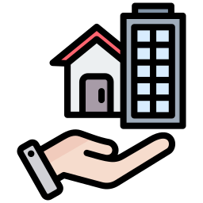
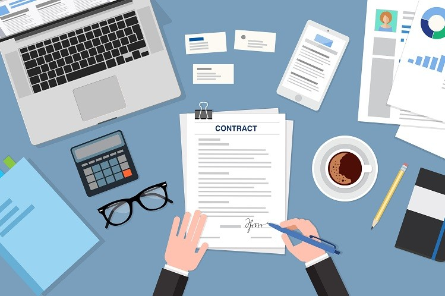

Projects & case studies
Enterprise data solutions, AI products and technical deep-dives.

Lloyds LivingBTR Portfolio Analytics
A unified Power BI model giving finance, operations and investment teams a single source of truth across a 7,500+ build-to-rent portfolio — occupancy, arrears, ERV and compliance.
Microsoft Fabric Platform Migration
Led the move from manual Excel/Access processes to a cloud-native Microsoft Fabric lakehouse with a Bronze–Silver–Gold medallion architecture — cutting manual processing time by ~80%.
Data Governance & Semantic Model
Built a governed single semantic model with row-level security, an audit-ready data dictionary and monthly data-quality governance with external managing agents.
Bilingual AI Call-Centre QA
An LLM-powered platform that evaluates customer interactions in English and Urdu — real-time voice transcription with structured scoring for quality assurance at scale.
AI Hospital Management System
Clinical transcription that converts multilingual patient–clinician conversations into structured records — reducing administrative burden and supporting clinical workflow efficiency.

Enterprise SolutionNWG Contract Management
A dashboard for a £3bn programme that reduced overdue compensation events by 30% and saved 10+ hours of manual reporting weekly.
Automated Parent Communication
An AI agent that monitors student data and automatically drafts personalised emails to parents for timely intervention and praise.
AI Report Card Generation
An AI-driven workflow that transforms raw student data into narrative-style term reports, saving hours of manual work.
 Personal Project
Personal ProjectHouse Prices Regression
A personal project predicting house prices using advanced regression techniques and feature engineering.
AI-Powered Data Dictionaries
Using AI to automatically generate intelligent, audit-ready data dictionaries for Power BI semantic models.
Automated Email Data Pipeline
An end-to-end pipeline that captures, validates and processes email attachments into actionable BI.
Automated Data Validation
A Python solution that uses an Excel data dictionary to automate data-quality checks and generate error reports.